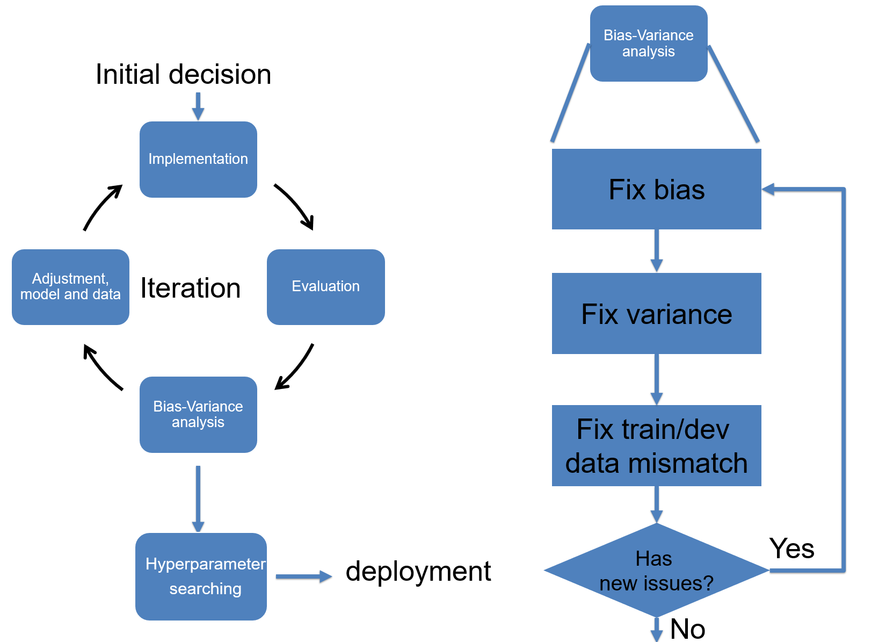

NHLBI, 2021 Fall
This offering is for Division of Intramural (DIR), NHLBI in Fall, 2021. The course consists of 12 lectures. We will start from basics of neural networks, introduce the loss function, optimization and how to setup and manage the training session. The next section is the convolutional neural network for imaging and vision tasks. We will learn the recurrent neural network (RNN) for the sequence data. More recently, attention mechanism and transformer models (BERT, GPT family etc.) are very popular. They are introduced after RNN. We will teach generative model and in details the GAN (generative adversarial network). The technique to visualize the neural network is introduced to help understand how and why the neural network works. The course will end with a focus on how to handle "small dataset" usecase, as in many practical applications, we may not be able to acquire large labelled dataset. Three techniques are introduced, transfer learning, meta learning and contrastive learning (as the more recent development of self-supervised learning).
For the NHLBI DIR community, the teaching objectives are:
* Introduce the basics of deep learning
* Present in-math how DL model works
* Provide practices to build your own model
* Grow interest and improve community awareness
* Prepare trainees and fellows for DL related jobs
For the student point of view, you will gradually learn the concepts and algorithms behind the deep neural network and master the tools required to build and train models. For every lecture, it comes with a reading list to broaden the understanding.
Assignments consist of questions and coding components and will be opened to student during teaching weeks. The focus is the understanding of basic concepts and how to design and apply deep learning to different problems.
We will use Pytorch. So it is a good idea to get yourself familiar with this package.
Prerequisites
Please review the mathematics for deep learning and learn basic Python and Numpy.
Instructors
- Hui Xue, hui.xue@nih.gov
- David Hansen, davidchansen@gradientsoftware.net
Schedule
Starting on the week of Sep 13, 2021
-
Lecture, every Wed, 10-11:30 am, US EST time
- Recurrent zoom link here
-
Q&A session, every Friday, 10-11am, US EST time
- Recurrent zoom link here
Syllabus
Prologue

Why do we want to spend hours in learning deep learning (DL)? I can articulate one big reason: Deep Learning is a set of key technique which can be applied to many different fields, from mobile phone to medical imaging, from robotics to online shopping, from new drug discovery to genomics. What is really amazing to me is that in this wave of technological revolution, the same set of technique, deep neural network, is solving many challenging problems which are drastically different. Yes, it is the same set of algorithms, software toolboxes and knowledge base are applied, reporting state-of-the-art performance.
This makes learning deep learning rewardable, because you will master something which can be widely applied and mostly likely will stay that way in the decades to come. According to ARK's research, deep learning will add $30 trillion to the global equity market capitalization during the next 15-20 years*. No something which should be ignored!
However, there are difficulties along the way. Often, more than superficial level of understanding of DL is required, if you want to find a notch to apply DL in your field and if no one has done this before you. There will not be pre-trained models which you can download. One has to understand the problem and design the model, invent new loss functions and put all pieces together to build a DL solution. Your solution needs to prove its value in deployment and gets better over time.
This course is to equip you with required knowledge to understand and apply DL by teaching how the deep neural network models work and by reviewing many DL architectures and applications. My hope is after this learning process, domain experts will feel confident to apply DL to their specific problems and datasets.
Video
Slides
Suggested Reading
- *For big pictures and where DL can fit, Ark Big Idea
- Artificial Intelligence Index Report 2021, AI report
Lecture 1

We start by motivating the deep learning for its broad applicability and future growth, and then introduce deep learning as a data driven approach. The basic terminology of neural network are reviewed. We set the stage for future discussion to introduce the binary and multi-class classification problems and the multi-layer perceptron (MLP) network. Other topics covered in this lecture include matrix broadcasting, universal approximation, logits, activation function etc.
Video
Slides
Suggested Reading
Lecture 2

This lecture introduces the concept of loss function to evaluate how well our model fits the data. The process to adjust model parameters to fit the data is called optimization. Gradient descent is a common algorithm used to optimize the model parameters, given the input dataset. This process is the training. We will review different training algorithms and introduce the concepts of training and testing. To measure our model performance in training and testing datasets, the bias and variance of model should be estimated. Other concepts introduced in this lecture include regularization, under-fitting, over-fitting, batch and mini-batch etc.
Video
Slides
Suggested Reading
Lecture 3

The key step to train a model is to follow the negative gradient direction to reduce the loss. But how do we compute the gradient direction? Through a process called the back propagation or backprop in short. This lecture discusses the backprop in detail. Backprop is based on two ideas: chain rule of derivative and divide-and-conquer. It allows us to compute complex derivative from loss to every learnable parameters in the model.
We will not review GPU devices for deep learning in lectures. Please review two documents in this week's reading list.
Video
Slides
Suggested Reading
Lecture 4

This lecture will finish our discussion on different optimization algorithms. We will introduce a few new methods and compare their pros and cons. The concept of hyper-parameter is explained, where a very important one is the learning rate. Different learning rate scheduling strategies are discussed in this lecture and help boost training performance. To search a good configuration of hyper-parameters, we will discuss coarse-to-fine, hyper-band and Bayesian methods. We close the lecture by discussing bag of tricks to set up the training process and cross-validation.
Video
Slides
Suggested Reading
- Optimization in deep learning
- Learning rate scheduler in Pytorch
- One-cycle learning rate scheduler
- One-cycle learning rate scheduler, post
- Hyper-parameter searching
- Set up training, chapter 40, 41, 42
Lecture 5

This lecture continues our discussion on training setup, with focus on handling data mismatching between training and test sets. The meaning and strategy to conduct error analysis are introduced. After finishing the training section, we discuss the method for data pre-processing and how to initialize the model parameters. The final section of this lecture introduces the deep learning debugging and iteration for model training. Tools for debugging are demonstrated.
Video
Slides
Suggested Reading
- Data mismatching
- Data pre-processing
- Data transformation in TorchVision
- Checklist to debug NN
- Debug python program using VSCode
Lecture 6

This lecture starts the convolutional neural network (CNN) by introducing the convolution operation and its application on image. Different variants of convolution is discussed, including stride, transpose, dilated CONV, 1D and 3D CONV, padding, and pooling. Image interpolation layer is introduced with other methods to up/downsample images. The batch normalization is introduced in this lecture, with its variants. Two CNN architectures are analyzed, LeNet-5 and AlexNet, in the history of ImageNet challenge.
Video
Slides
Suggested Reading
Closing remarks
- An insightful post for future of AI society Moore's Law for Everything